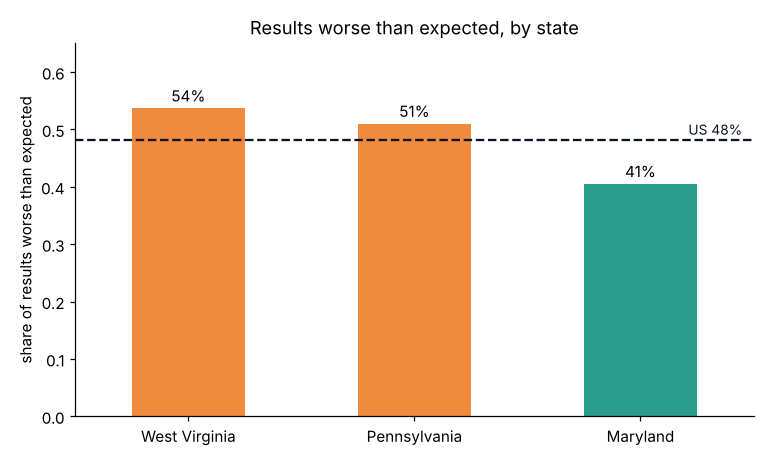
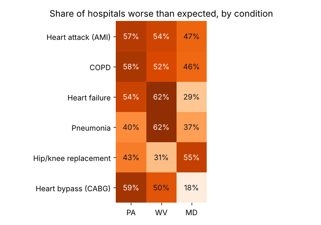
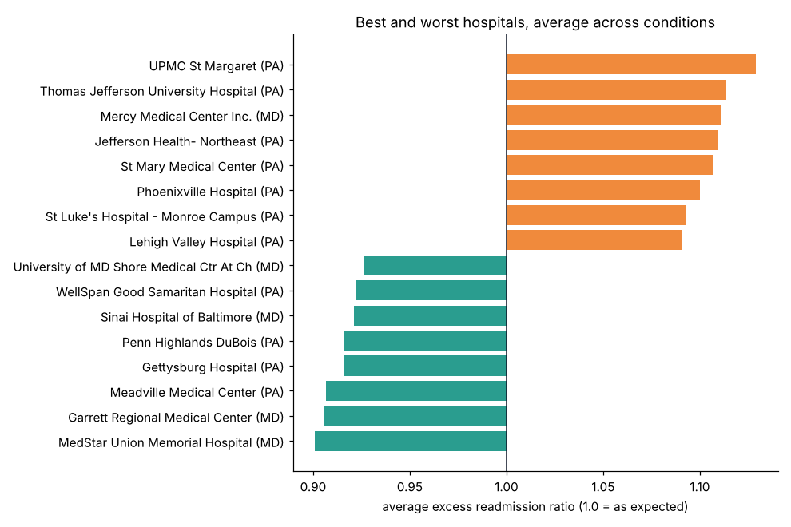
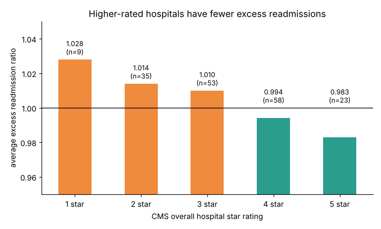

201Hospitals in PA, WV and MD
835Hospital-condition results analyzed
49%Worse than expected (US: 48%)
924Readmissions above expected
Interactive dashboard
Open full screen on Tableau Public →
Click a hospital on the map or in the ranking to see its results by condition. Use the Top N slider to show more or fewer hospitals in the ranking.
Key findings
| Question | Finding | Recommendation |
|---|---|---|
| States vs nation | West Virginia (54%) and Pennsylvania (51%) have more results worse than expected than the US (48%); Maryland is lower at 41%. | Focus readmission-reduction programs on PA and WV hospitals. |
| Conditions | In West Virginia, 62% of hospitals are worse than expected for heart failure and pneumonia. In Pennsylvania, heart bypass (59%), COPD (58%) and heart attack (57%) lead. | Target discharge planning and follow-up calls for these conditions, state by state. |
| Hospitals | Of 172 hospitals with 3+ results, 10 are worse than expected on every condition they report and 12 on none. | Study how the consistent performers handle discharges and share it across health systems. |
| Star ratings | The average ratio falls steadily from 1.028 at 1-star hospitals to 0.983 at 5-star hospitals (correlation −0.29). | Readmissions track overall quality, so quality programs should include post-discharge follow-up. |
| Local | Garrett Regional Medical Center in Oakland, MD ranks 2nd of 172, better than expected on all 4 conditions it reports. | A small rural hospital can match large academic centers on readmissions. |
Charts




Method
- Data: CMS Hospital Readmissions Reduction Program, FY 2026 (Medicare discharges Jul 2021 – Jun 2024; 18,330 rows nationally), joined to CMS Hospital General Information for city, county, ZIP code and star rating.
- Metric: the excess readmission ratio, predicted ÷ expected readmissions for each hospital and condition. Above 1.0 means more readmissions than a similar hospital with similar patients would have.
- Cleaning: filtered to PA, WV and MD; kept CMS's “not reported” results out of comparisons; standardized hospital names; added national medians per condition as a benchmark.
- Analysis: compared states, conditions and hospitals in pandas, ranked hospitals with 3+ results so one condition can't decide a rank, and answered the same questions in SQL with CTEs, joins and window functions (RANK, NTILE).
- Dashboard: built in Tableau and published to Tableau Public, with a hospital map, a condition heat map, a ranking, star-rating comparison and a click-to-drill hospital detail panel.
Files
Limitations: Medicare patients only. CMS exempts Maryland hospitals from readmission payment penalties under the state's own Medicare model, though their results are still published. Small hospitals often have too few cases to report. The hospital average weights each condition equally regardless of patient volume.
← Back to all projects